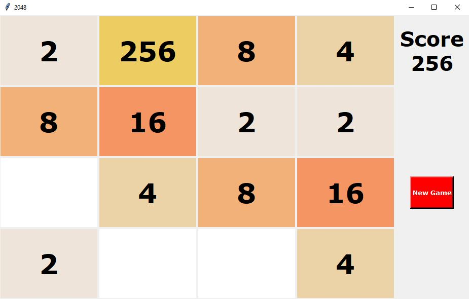
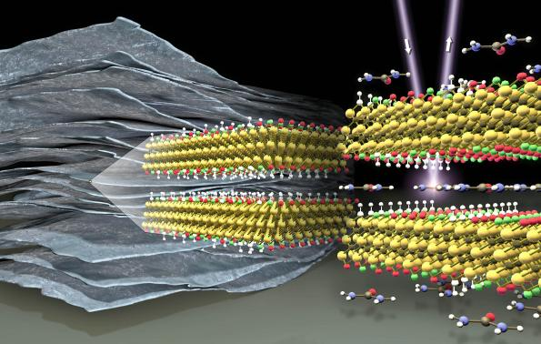
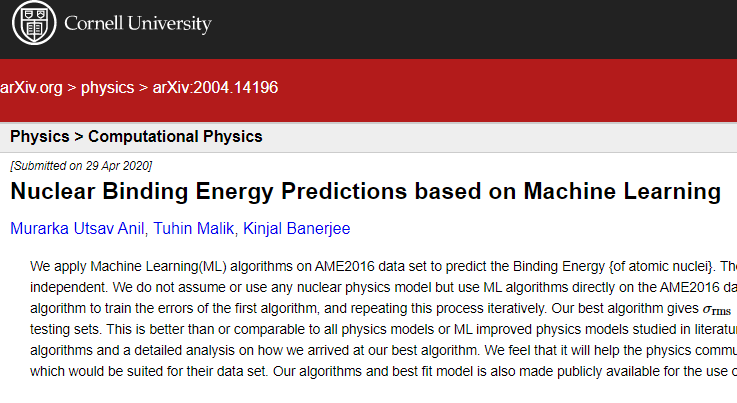

About
I am a Software Engineer with over years of experience, currently working at ServiceNow, where I started out as a Summer Intern in 2021, and later returned as a full-time employee. Prior to joining ServiceNow, I also worked as an intern at Amazon in the Amazon Pay team.
I graduated with a Bachelors in Computer Science and a Masters in Physics from BITS Pilani, Goa Campus in 2022. During my time at BITS, I was engaged in several Research Projects, one of which led to a publication in the Journal of Cosmology And Astroparticle Physics (JCAP).
Experience
Senior Software Engineer
- AI Response Assist: Leading engineering for a GenAI feature that drafts answers to enterprise risk and compliance assessments by grounding against past responses and uploaded evidence (demo).
- RAG & Async Architecture: Architected a multilingual hybrid RAG pipeline with document-grounded answering across PDFs and spreadsheets, backed by a fault-tolerant asynchronous transactions management framework.
- LLM Evaluation Suite: Developed an LLM-as-a-judge evaluation suite for metrics including correctness, completeness, and faithfulness, and tuned prompts against golden benchmark datasets across multiple LLM providers.
Software Engineer
- Real-Time Collaboration: Delivered concurrent authoring for the Smart Assessment Collaboration capability on the Smart Assessment Engine, including live synchronization and presence indicators.
- Condition & Rule Engines: Built the no-code Condition Builder and Post-Assessment Actions rule engine, powering conditional visibility, preferred answers, and automated workflow triggers.
- Platform Integration: Collaborated across product, UX, and technical writing teams to define the SAE roadmap and onboard consuming ServiceNow applications like Field Service Management (demo).
Associate Software Engineer
- Autosave Infrastructure: Built full-stack autosave functionality across UI, REST APIs, and WebSockets for Risk Assessments.
- Internal Engineering Tools: Developed internal tools for user-role hierarchy validation and licensing simulation.
- Accessibility: Resolved accessibility issues to ensure WCAG compliance for screen readers, keyboard navigation, and high contrast modes.
- Amazon Pay GraphQL: Productionized a proof-of-concept of the selection safe-listing feature in Amazon's internal GraphQL service.
- Low-Level Design & Implementation: Authored the low-level design (LLD) and implemented it in Java with shared utilities reused across the persisted-queries module.
- Astrophysics Research: Pursued research under Dr. Kinjal Banerjee, leading to a first-author publication in the Journal of Cosmology and Astroparticle Physics (JCAP).
- Master's Thesis: Completed thesis on time series modelling of the Indian stock market using machine learning under Dr. Chandradew Sharma.
- Teaching Assistant: TA for the Computational Physics course by Dr. Gaurav Dar.
- AI Interview Bot: Implemented an automated conversational AI chatbot application using Django, PostgreSQL, and Dialogflow API to conduct technical interviews.
- Database & Webhooks: Designed schema in PostgreSQL and integrated real-time webhook endpoints.
Research
The neutron star outer crust equation of state: A machine learning approach
The Journal of Cosmology and Astroparticle Physics · January 2022
View PaperTime series modelling of the Indian stock market: A machine learning approach
Master's Thesis · BITS Pilani · December 2021
View PaperProjects

2048 Game Clone
Cloned the 2048 game using Python. Created a GUI using Tkinter.

ML based MXene Classification
Trained ML model using Scikit-learn and Tensorflow to classify MXenes into metals and non-metals.

Nuclear Binding Energy Prediction
Created ML based models trained on Experimental data to predict Nuclear Binding Energies.
Other Coursework Projects
- Compilers: Created an Interpreter for a modified 2048 game using Lex & Yacc.
- Artificial Intelligence: Implemented a 15-puzzle solver using A-star search algorithm in Python.
- Neuroscience: Simulated the responses of a neuron to a steady stimulus based on the Hodgkin-Huxley model in MATLAB.
- Physics & ML: Compared the performance of various ML models with highly imbalanced data for identifying pulsar signals.